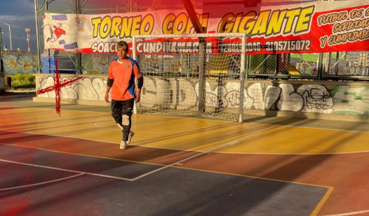
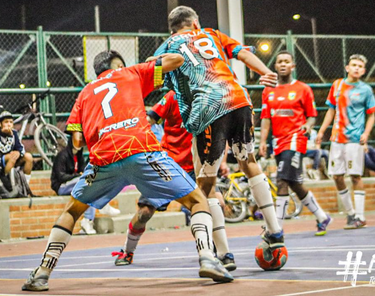
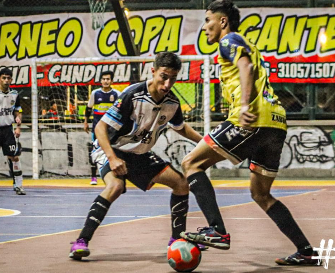
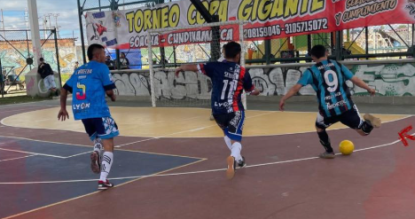
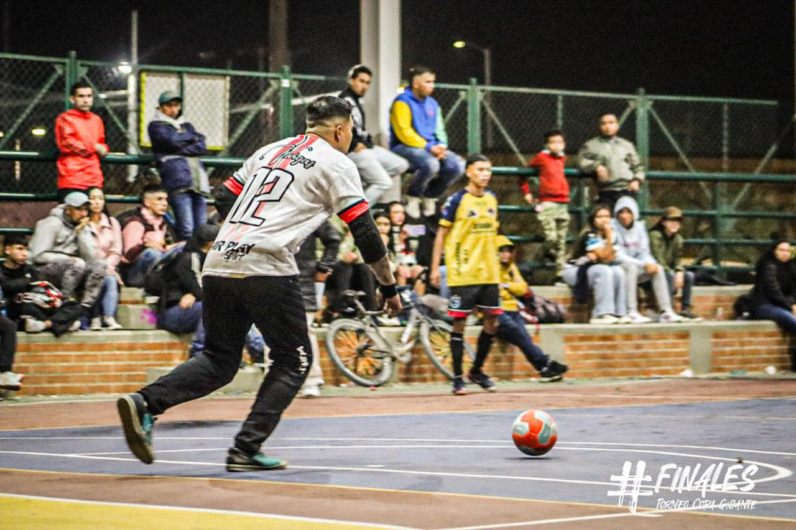
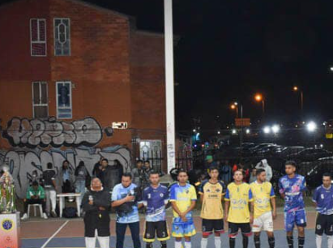
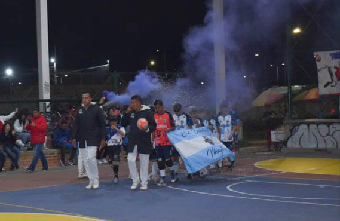
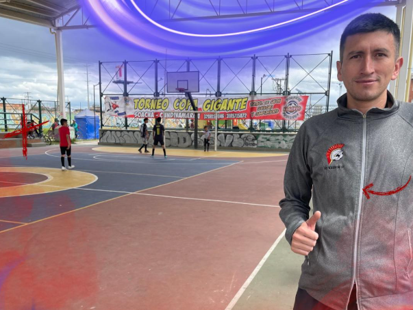
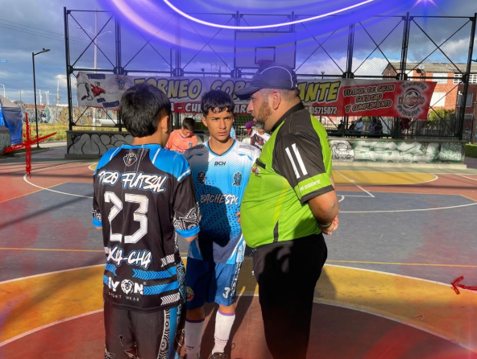

Portero: Defensa principal. Su función es evitar que el balón entre en la portería.
Defensa 1: Protección del área. Su tarea es bloquear y desviar los ataques del equipo contrario.
Defensa 2: Apoyo defensivo. Ayuda al primer defensa a mantener el área segura.
Medio: Control del juego. Su función es distribuir el balón y mantener el control del juego en el medio campo.
Delantero: Principal atacante. Su principal responsabilidad es marcar goles.
Tienda del vecino. Lugar donde puedes comprar snacks y bebidas.

Gradas. Área donde los espectadores pueden sentarse y ver el partido.
Casa de nuestro amigo más cercano. Punto de reunión antes y después de los partidos.
Salida y entrada de la cancha. Punto de acceso principal al campo de juego.
Parqueadero de motos. Área designada para estacionar motocicletas.

Ubicación campos técnicos. Zona de los entrenadores y el personal técnico.
Árbitro: Responsable de hacer cumplir las reglas del juego.
